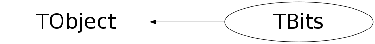

class TBits: public TObject
TBits Container of bits This class provides a simple container of bits. Each bit can be set and tested via the functions SetBitNumber and TestBitNumber. . The default value of all bits is kFALSE. The size of the container is automatically extended when a bit number is either set or tested. To reduce the memory size of the container use the Compact function, this will discard the memory occupied by the upper bits that are 0.
Function Members (Methods)
public:
| TBits(UInt_t nbits = 8) | |
| TBits(const TBits&) | |
| virtual | ~TBits() |
| void | TObject::AbstractMethod(const char* method) const |
| virtual void | TObject::AppendPad(Option_t* option = "") |
| virtual void | TObject::Browse(TBrowser* b) |
| static TClass* | Class() |
| virtual const char* | TObject::ClassName() const |
| virtual void | Clear(Option_t* option = "") |
| virtual TObject* | TObject::Clone(const char* newname = "") const |
| void | Compact() |
| virtual Int_t | TObject::Compare(const TObject* obj) const |
| virtual void | TObject::Copy(TObject& object) const |
| UInt_t | CountBits(UInt_t startBit = 0) const |
| virtual void | TObject::Delete(Option_t* option = "")MENU |
| virtual Int_t | TObject::DistancetoPrimitive(Int_t px, Int_t py) |
| virtual void | TObject::Draw(Option_t* option = "") |
| virtual void | TObject::DrawClass() constMENU |
| virtual TObject* | TObject::DrawClone(Option_t* option = "") constMENU |
| virtual void | TObject::Dump() constMENU |
| virtual void | TObject::Error(const char* method, const char* msgfmt) const |
| virtual void | TObject::Execute(const char* method, const char* params, Int_t* error = 0) |
| virtual void | TObject::Execute(TMethod* method, TObjArray* params, Int_t* error = 0) |
| virtual void | TObject::ExecuteEvent(Int_t event, Int_t px, Int_t py) |
| virtual void | TObject::Fatal(const char* method, const char* msgfmt) const |
| virtual TObject* | TObject::FindObject(const char* name) const |
| virtual TObject* | TObject::FindObject(const TObject* obj) const |
| UInt_t | FirstNullBit(UInt_t startBit = 0) const |
| UInt_t | FirstSetBit(UInt_t startBit = 0) const |
| void | Get(Char_t* array) const |
| void | Get(UChar_t* array) const |
| void | Get(Short_t* array) const |
| void | Get(UShort_t* array) const |
| void | Get(Int_t* array) const |
| void | Get(UInt_t* array) const |
| void | Get(Long64_t* array) const |
| void | Get(ULong64_t* array) const |
| virtual Option_t* | TObject::GetDrawOption() const |
| static Long_t | TObject::GetDtorOnly() |
| virtual const char* | TObject::GetIconName() const |
| virtual const char* | TObject::GetName() const |
| UInt_t | GetNbits() const |
| UInt_t | GetNbytes() const |
| virtual char* | TObject::GetObjectInfo(Int_t px, Int_t py) const |
| static Bool_t | TObject::GetObjectStat() |
| virtual Option_t* | TObject::GetOption() const |
| virtual const char* | TObject::GetTitle() const |
| virtual UInt_t | TObject::GetUniqueID() const |
| virtual Bool_t | TObject::HandleTimer(TTimer* timer) |
| virtual ULong_t | TObject::Hash() const |
| virtual void | TObject::Info(const char* method, const char* msgfmt) const |
| virtual Bool_t | TObject::InheritsFrom(const char* classname) const |
| virtual Bool_t | TObject::InheritsFrom(const TClass* cl) const |
| virtual void | TObject::Inspect() constMENU |
| void | TObject::InvertBit(UInt_t f) |
| virtual TClass* | IsA() const |
| virtual Bool_t | TObject::IsEqual(const TObject* obj) const |
| virtual Bool_t | TObject::IsFolder() const |
| Bool_t | TObject::IsOnHeap() const |
| virtual Bool_t | TObject::IsSortable() const |
| Bool_t | TObject::IsZombie() const |
| virtual void | TObject::ls(Option_t* option = "") const |
| void | TObject::MayNotUse(const char* method) const |
| virtual Bool_t | TObject::Notify() |
| void | TObject::Obsolete(const char* method, const char* asOfVers, const char* removedFromVers) const |
| static void | TObject::operator delete(void* ptr) |
| static void | TObject::operator delete(void* ptr, void* vp) |
| static void | TObject::operator delete[](void* ptr) |
| static void | TObject::operator delete[](void* ptr, void* vp) |
| void* | TObject::operator new(size_t sz) |
| void* | TObject::operator new(size_t sz, void* vp) |
| void* | TObject::operator new[](size_t sz) |
| void* | TObject::operator new[](size_t sz, void* vp) |
| Bool_t | operator!=(const TBits& other) const |
| TBits& | operator&=(const TBits& rhs) |
| TBits | operator<<(UInt_t rhs) |
| TBits& | operator<<=(UInt_t rhs) |
| TBits& | operator=(const TBits&) |
| Bool_t | operator==(const TBits& other) const |
| TBits | operator>>(UInt_t rhs) |
| TBits& | operator>>=(UInt_t rhs) |
| TBits::TReference | operator[](UInt_t bitnumber) |
| Bool_t | operator[](UInt_t bitnumber) const |
| TBits& | operator^=(const TBits& rhs) |
| TBits& | operator|=(const TBits& rhs) |
| TBits | operator~() |
| void | Output(ostream&) const |
| virtual void | Paint(Option_t* option = "") |
| virtual void | TObject::Pop() |
| virtual void | Print(Option_t* option = "") const |
| virtual Int_t | TObject::Read(const char* name) |
| virtual void | TObject::RecursiveRemove(TObject* obj) |
| void | ResetAllBits(Bool_t value = kFALSE) |
| void | TObject::ResetBit(UInt_t f) |
| void | ResetBitNumber(UInt_t bitnumber) |
| virtual void | TObject::SaveAs(const char* filename = "", Option_t* option = "") constMENU |
| virtual void | TObject::SavePrimitive(ostream& out, Option_t* option = "") |
| void | Set(UInt_t nbits, const Char_t* array) |
| void | Set(UInt_t nbits, const UChar_t* array) |
| void | Set(UInt_t nbits, const Short_t* array) |
| void | Set(UInt_t nbits, const UShort_t* array) |
| void | Set(UInt_t nbits, const Int_t* array) |
| void | Set(UInt_t nbits, const UInt_t* array) |
| void | Set(UInt_t nbits, const Long64_t* array) |
| void | Set(UInt_t nbits, const ULong64_t* array) |
| void | TObject::SetBit(UInt_t f) |
| void | TObject::SetBit(UInt_t f, Bool_t set) |
| void | SetBitNumber(UInt_t bitnumber, Bool_t value = kTRUE) |
| virtual void | TObject::SetDrawOption(Option_t* option = "")MENU |
| static void | TObject::SetDtorOnly(void* obj) |
| static void | TObject::SetObjectStat(Bool_t stat) |
| virtual void | TObject::SetUniqueID(UInt_t uid) |
| virtual void | ShowMembers(TMemberInspector& insp) |
| virtual void | Streamer(TBuffer& b) |
| void | StreamerNVirtual(TBuffer& b) |
| virtual void | TObject::SysError(const char* method, const char* msgfmt) const |
| Bool_t | TObject::TestBit(UInt_t f) const |
| Bool_t | TestBitNumber(UInt_t bitnumber) const |
| Int_t | TObject::TestBits(UInt_t f) const |
| virtual void | TObject::UseCurrentStyle() |
| virtual void | TObject::Warning(const char* method, const char* msgfmt) const |
| virtual Int_t | TObject::Write(const char* name = 0, Int_t option = 0, Int_t bufsize = 0) |
| virtual Int_t | TObject::Write(const char* name = 0, Int_t option = 0, Int_t bufsize = 0) const |
protected:
| void | DoAndEqual(const TBits& rhs) |
| virtual void | TObject::DoError(int level, const char* location, const char* fmt, va_list va) const |
| void | DoFlip() |
| void | DoLeftShift(UInt_t shift) |
| void | DoOrEqual(const TBits& rhs) |
| void | DoRightShift(UInt_t shift) |
| void | DoXorEqual(const TBits& rhs) |
| void | TObject::MakeZombie() |
| void | ReserveBytes(UInt_t nbytes) |
Data Members
public:
| enum TObject::EStatusBits { | kCanDelete | |
| kMustCleanup | ||
| kObjInCanvas | ||
| kIsReferenced | ||
| kHasUUID | ||
| kCannotPick | ||
| kNoContextMenu | ||
| kInvalidObject | ||
| }; | ||
| enum TObject::[unnamed] { | kIsOnHeap | |
| kNotDeleted | ||
| kZombie | ||
| kBitMask | ||
| kSingleKey | ||
| kOverwrite | ||
| kWriteDelete | ||
| }; |
Class Charts
{kind=link}
{kind=link}
{kind=link}
{kind=link}

Function documentation
void DoAndEqual(const TBits& rhs)
Execute (*this) &= rhs; Extra bits in rhs are ignored Missing bits in rhs are assumed to be zero.
void DoOrEqual(const TBits& rhs)
Execute (*this) &= rhs; Extra bits in rhs are ignored Missing bits in rhs are assumed to be zero.
void DoXorEqual(const TBits& rhs)
Execute (*this) ^= rhs; Extra bits in rhs are ignored Missing bits in rhs are assumed to be zero.
UInt_t FirstNullBit(UInt_t startBit = 0) const
Return position of first null bit (starting from position 0 and up)
UInt_t FirstSetBit(UInt_t startBit = 0) const
Return position of first non null bit (starting from position 0 and up)
void Paint(Option_t* option = "")
Once implemented, it will draw the bit field as an histogram. use the TVirtualPainter as the usual trick
void Set(UInt_t nbits, const Int_t* array)
make nbytes a multiple of 4 so that the loop below is neat.
void Set(UInt_t nbits, const Long64_t* array)
make nbytes a multiple of 8 so that the loop below is neat.
void ResetBitNumber(UInt_t bitnumber)
Bool_t operator[](UInt_t bitnumber) const
TBits::TReference operator[](UInt_t bitnumber)
----- Accessors and operator
{ return TReference(*this,bitnumber); }void Set(UInt_t nbits, const Char_t* array)
----- Optimized setters Each of these will replace the contents of the receiver with the bitvector in the parameter array. The number of bits is changed to nbits. If nbits is smaller than fNbits, the receiver will NOT be compacted.
void Get(Char_t* array) const
----- Optimized getters Each of these will replace the contents of the parameter array with the bits in the receiver. The parameter array must be large enough to hold all of the bits in the receiver. Note on semantics: any bits in the parameter array that go beyond the number of the bits in the receiver will have an unspecified value. For example, if you call Get(Int*) with an array of one integer and the TBits object has less than 32 bits, then the remaining bits in the integer will have an unspecified value.